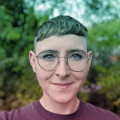
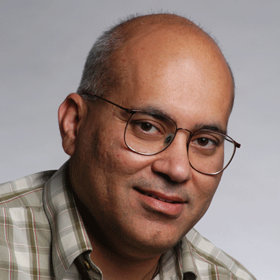
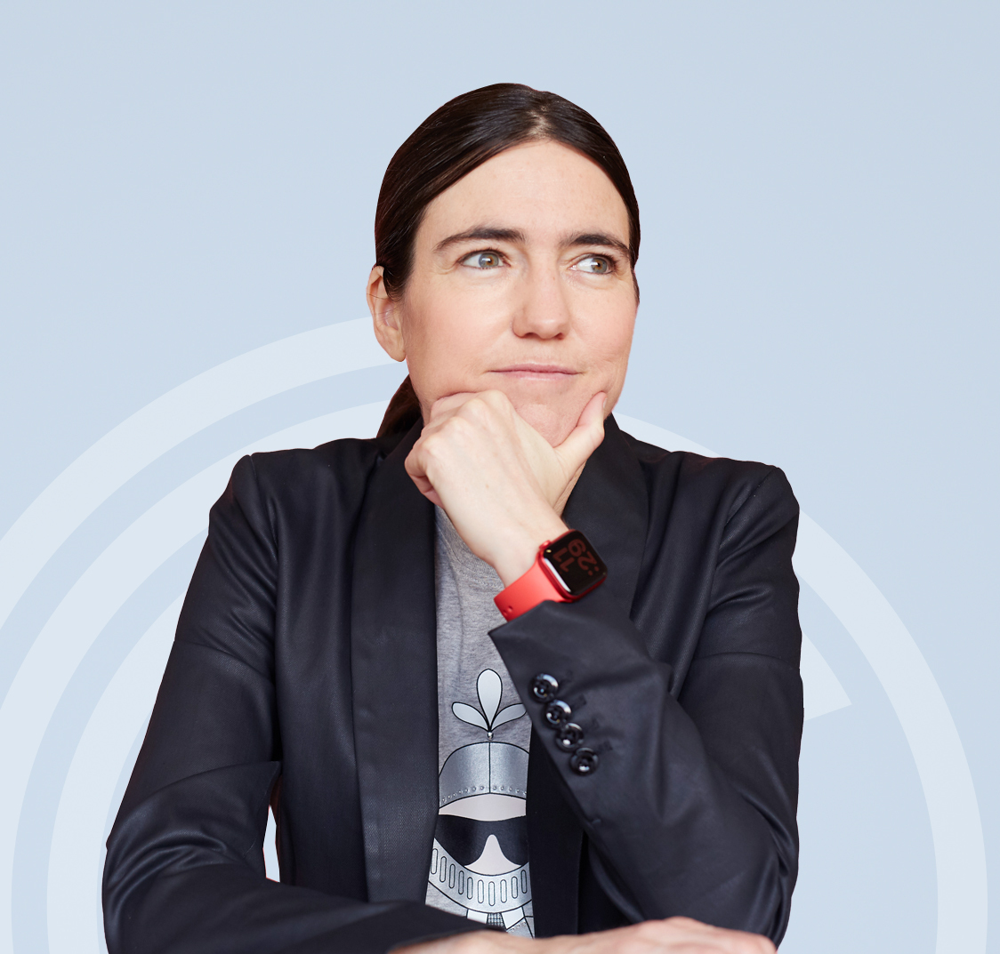

The workshop will focus on an in-depth discussion of the future of ethical, responsible, privacy-aware dataset construction, focussed around a single key question:
"What are the necessary and sufficient guidelines, tools, and frameworks for building responsible and socially-aware future computer vision datasets?"
The following topics are within scope for the workshop:
|  |
Dr. Emily Denton Dr. Emily Denton is a Research Scientist on Google’s Ethical AI team, studying the societal impacts of machine learning and AI technology. Their recent research centers on critically examining the norms, values, and work practices that structure the development and use of machine learning datasets. Prior to joining Google, Dr. Denton received their PhD in machine learning from the Courant Institute of Mathematical Sciences at New York University, focusing on unsupervised learning and generative modeling of images and video. They also volunteer with Out in Tech, where they help coordinate an LGBTQ+ youth mentorship program. |
|  |
Dr. Jitendra Malik Prof. Jitendra Malik is currently the Arthur J. Chick Professor in the Department of Electrical Engineering and Computer Science at Berkeley, as well as the Research Director and Site Lead of Facebook AI Research in Menlo Park. Prof. Malik's research group has worked on many different topics in computer vision, computational modeling of human vision, computer graphics and the analysis of biological images. He is the recipient of numerous awards, including the 2016 ACM-AAAI Allen Newell Award, the 2018 IJCAI Award for Research Excellence in AI, and the 2019 IEEE Computer Society Computer Pioneer Award. |
|  |
Dr. Raquel Urtasun Raquel Urtasun is a Full Professor in the Department of Computer Science at the University of Toronto and a co-founder of the Vector Institute for AI. From 2017 to 2021 she was the Chief Scientist and Head of R&D at Uber ATG. She is a world leading expert in AI for self-driving cars. Her research interests include machine learning, computer vision, robotics and remote sensing. Her lab was selected as an NVIDIA NVAIL lab. She is a recipient of an NSERC EWR Steacie Award, two NVIDIA Pioneers of AI Award, a Ministry of Education and Innovation Early Researcher Award, three Google Faculty Research Awards, an Amazon Faculty Research Award, a Connaught New Researcher Award, a Fallona Family Research Award and two Best Paper Runner up Prize awarded at CVPR in 2013 and 2017. She was also named Chatelaine 2018 Woman of the year, and 2018 Toronto's top influencers by Adweek magazine. |
(all times in EDT)
| Website source |